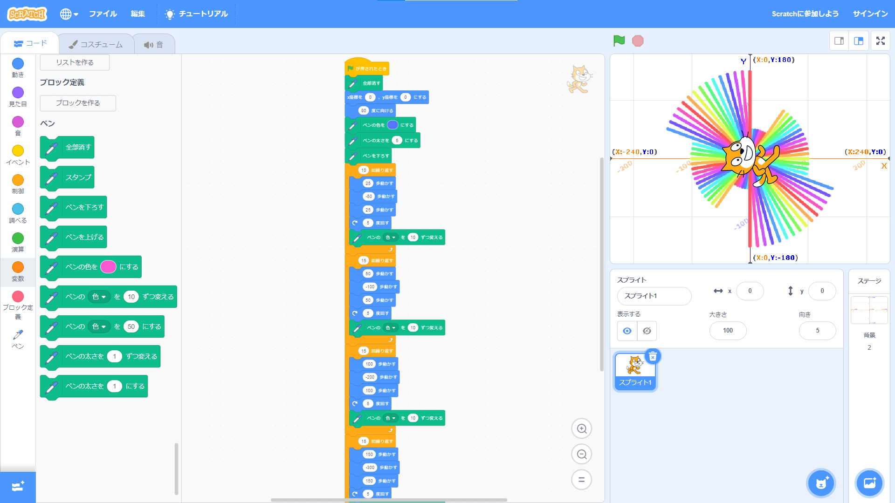
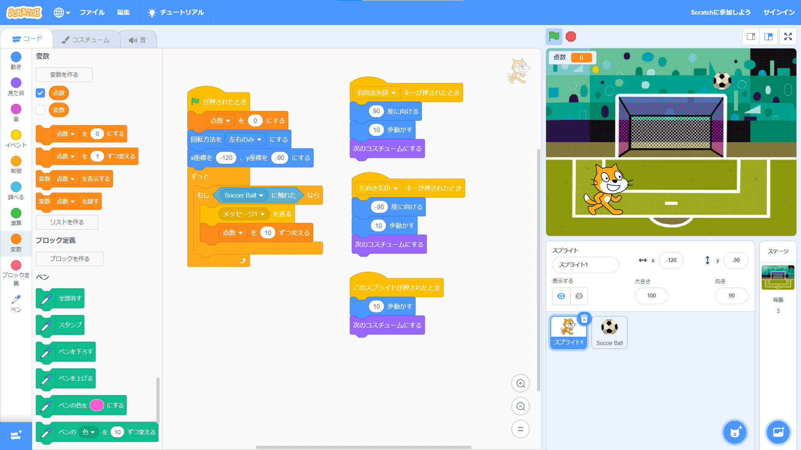

1週目のレポート ： 公大高専１年実習I-1
1B班30番 kztfuku
第1週目
1-1 サイエンスアート

1.内容
スクラッチを使って線を描くプログラムを作成した。ペンの色と太さを指定しペンを下ろし、ネコを動かすことで線を描くことができる。
作成したものは、スクラッチキャットの歩く長さを変えながら回転することで、段を作っている。
2.感想
ペンの色や、太さ、歩く距離・角度を変えることで様々な図形を生み出すことができ面白いと思った。
簡単に数値を変更できて、直感的にプログラミングができるのが良いと思った。
1-2 ゲーム

1.内容
上から落ちてくるサッカーボールを取ると点数が増えていくゲームを作成した。
キーボードの矢印キーで動作させ、ネコが移動すると、向きが反転するようにした。
また、 サッカーボールの落下速度と位置をランダムにした。
2.感想
ゲームを作ると聞き難しいのでは思ったが、とても簡単にゲームを作ることができて、驚いた。
難易度は矢印キーを一回押されたときのネコの動く距離や、ボールの落ちてくる速度を変えることで変更できると考えた。
1-3 ホームページ作成
私のホームページ
1.内容
ないようないよう
2.感想
かんそうかんそう